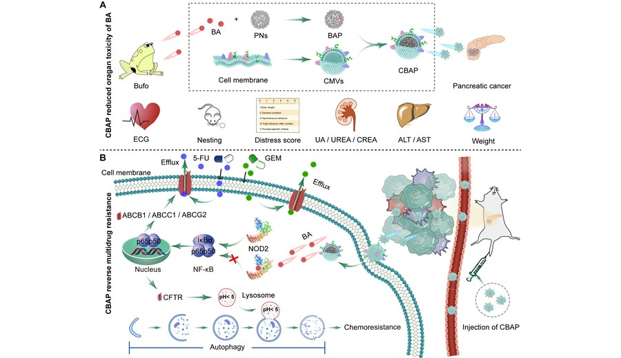

Cell membrane-camouflaged bufalin targets NOD2 and overcomes multidrug resistance in pancreatic cancer
Developed a cell-membrane-camouflaged bufalin delivery strategy targeting NOD2 to overcome multidrug resistance in pancreatic cancer.
Drug Resistance Updates. 2023;71:101005. IF 24.3
Pancreatic cancerBufalinDrug resistance
Publisher